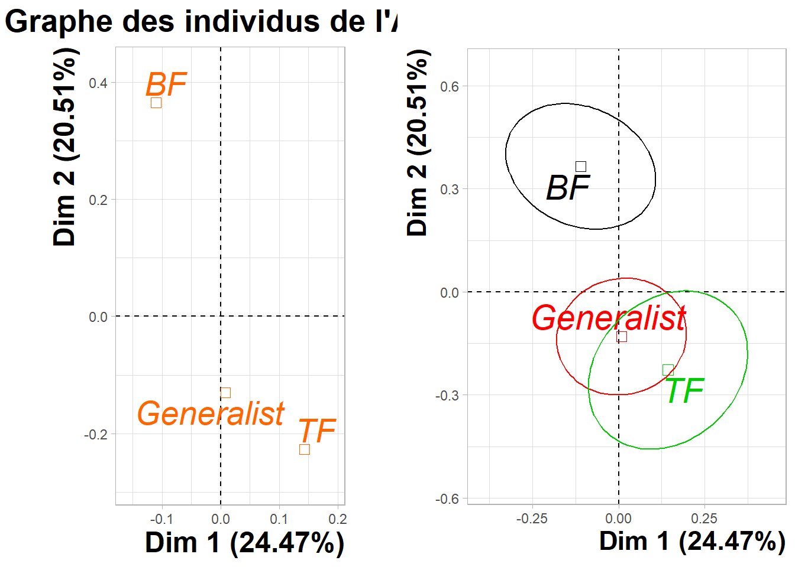
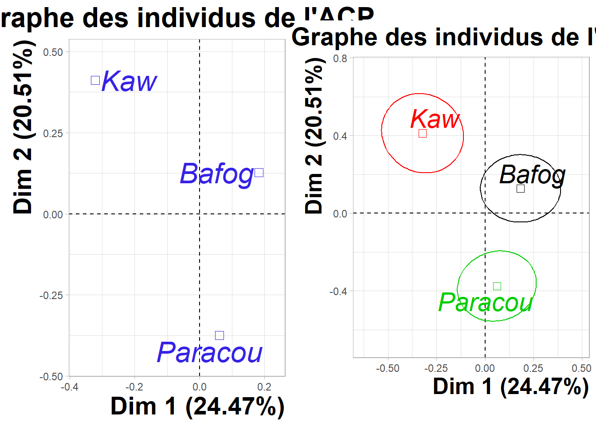
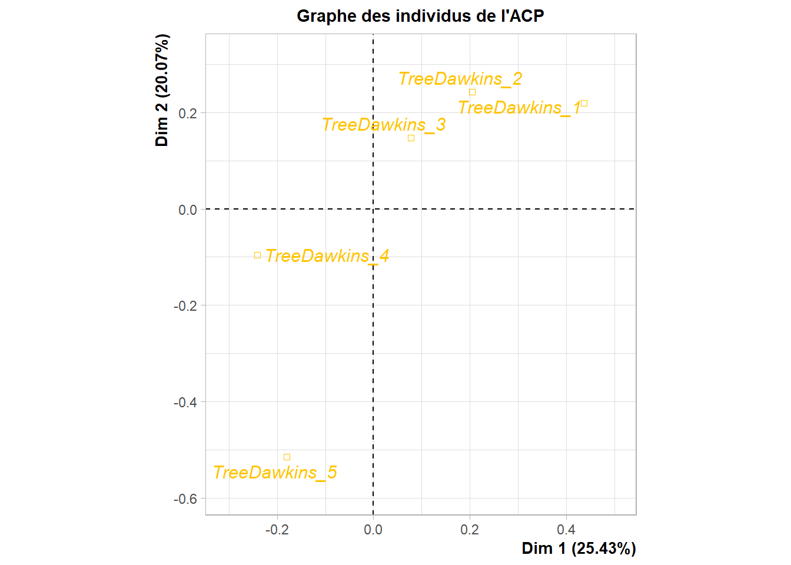
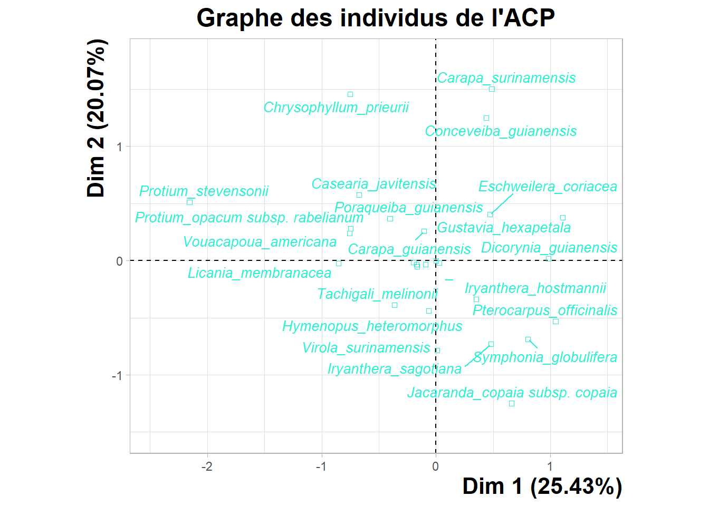
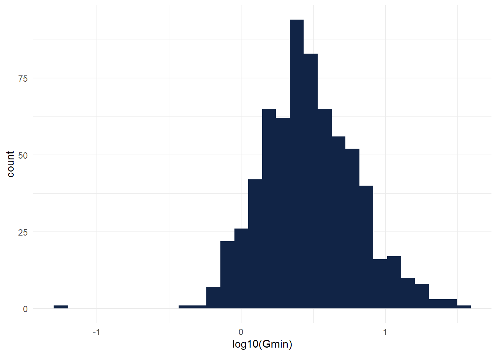
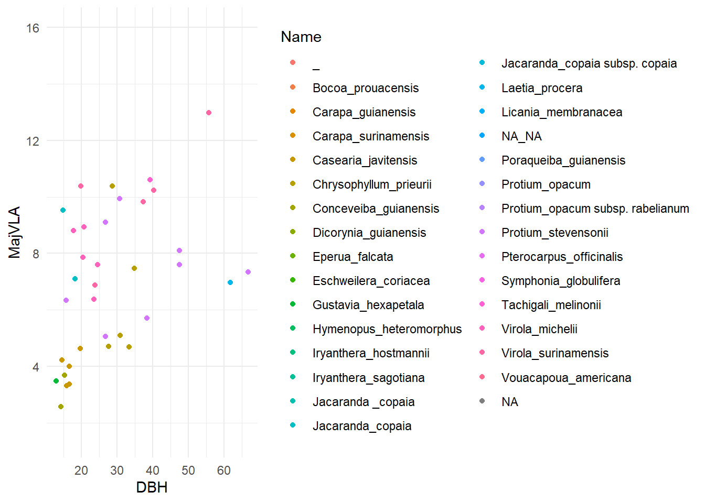
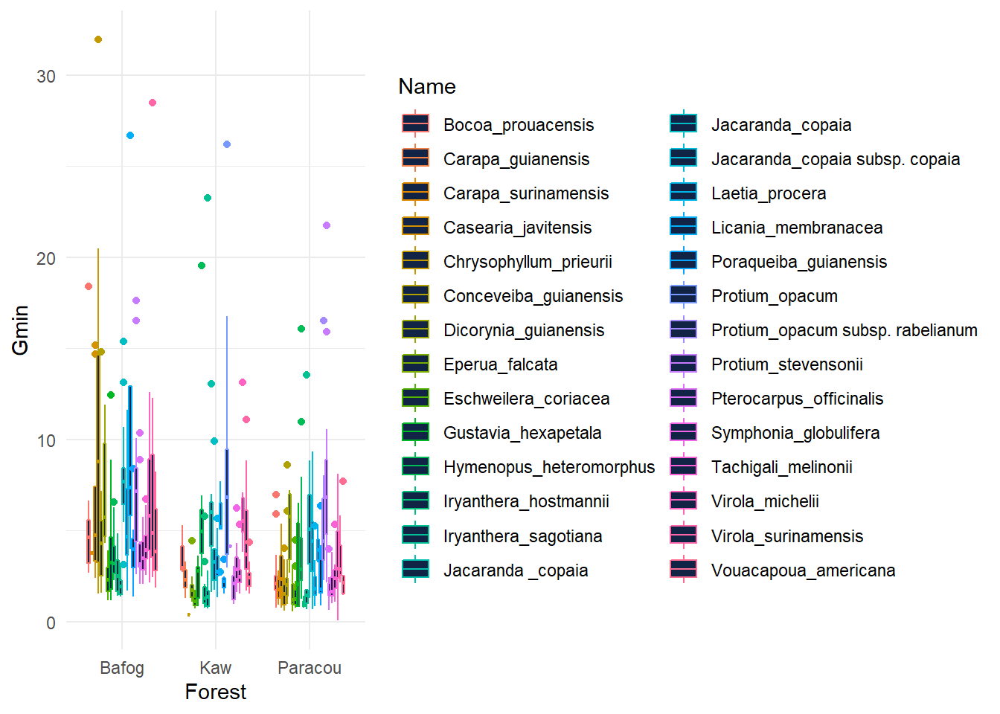
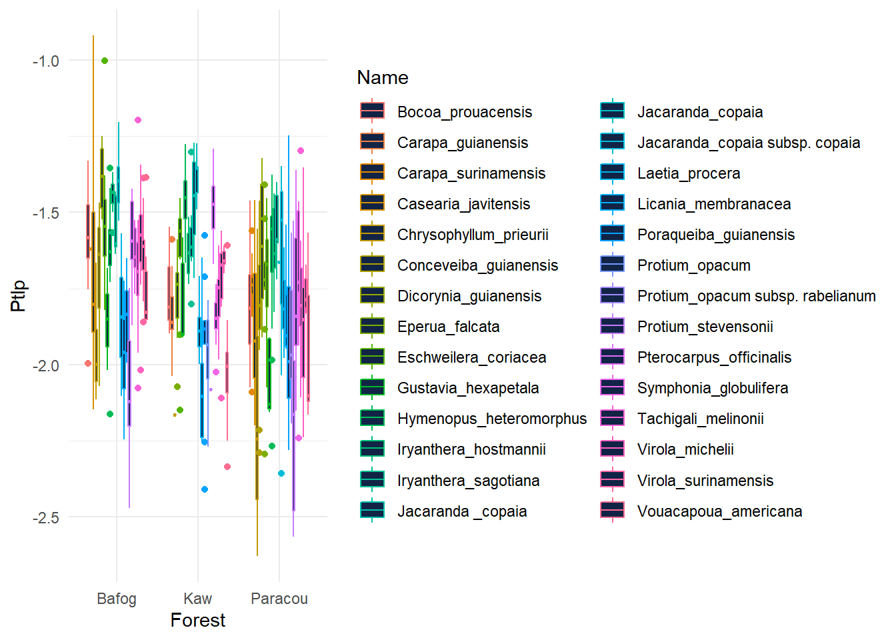

Chapter 9 General PCA
9.1 Contribution of individuals and variables : 1-2 dimensions
library(FactoMineR)
library(Factoshiny)
#resultPCA <- Factoshiny(Metradica)
#dim 1-2
#Contribution
res.PCA<-PCA(Metradica[,-c(2,3,4,5,6,7,23,24,25,26,27,32,31)],graph=FALSE)
a1<- plot.PCA(res.PCA,choix='var',habillage = 'contrib',title="Graphe des variables de l'ACP")
a2<-plot.PCA(res.PCA,invisible=c('quali'),habillage='contrib',title="Graphe des individus de l'ACP",cex=2,cex.main=2,cex.axis=2,col.quali='#9AE019',label =c('ind.sup'))
ggpubr::ggarrange(nrow = 1, plotlist = list(a2,a1), ncols =2)
9.2 Contribution of individuals and variables : 1-2 dimensions
#dim 3-4
res.PCA<-PCA(Metradica[,-c(2,3,4,5,6,7,23,24,25,26,27,32,31)],graph=FALSE)
b1<-plot.PCA(res.PCA,axes=c(3,4),choix='var',title="Graphe des variables de l'ACP")
b2<-plot.PCA(res.PCA,axes=c(3,4),invisible=c('ind.sup'),title="Graphe des individus de l'ACP",cex=2,cex.main=2,cex.axis=2,col.quali='#9AE019', label = c('quali'))
ggpubr::ggarrange(nrow = 1, plotlist = list(b2,b1), ncols =2)
9.3 Habitat collected
#Habitat collected
res.PCA<-PCA(Metradica[,-c(2,3,4,5,7,23,24,25,26,27)],quali.sup=c(2),graph=FALSE)
c1 <- plot.PCA(res.PCA,choix='var',title="Graphe des variables de l'ACP")
c2 <- plot.PCA(res.PCA,invisible=c('ind','ind.sup'),title="Graphe des individus de l'ACP",cex=1.8,cex.main=1.8,cex.axis=1.8,label =c('quali'))
ggpubr::ggarrange(nrow = 1, plotlist = list(c2,c1), ncols =2)
9.4 Habitat preference -type
res.PCA<-PCA(Metradica[,-c(2,3,4,5,6,23,24,25,26,27)],quali.sup=c(2),graph=FALSE)
d1<- plot.PCA(res.PCA,choix='var',title="Graphe des variables de l'ACP")
d2<- plot.PCA(res.PCA,invisible=c('ind','ind.sup'),title="Graphe des individus de l'ACP",cex=1.8,cex.main=1.8,cex.axis=1.8,col.quali='#FF6600',label =c('quali'))
ggpubr::ggarrange(nrow = 1, plotlist = list(d2,d1), ncols =2)
9.5 Forest sites
res.PCA<-PCA(Metradica[,-c(2,3,4,6,7,23,24,25,26,27)],quali.sup=c(2),graph=FALSE)
e1<-plot.PCA(res.PCA,choix='var',title="Graphe des variables de l'ACP")
e2<-plot.PCA(res.PCA,invisible=c('ind','ind.sup'),title="Graphe des individus de l'ACP",cex=2.1,cex.main=2.1,cex.axis=2.1,col.quali='#3622E6',label =c('quali'))
ggpubr::ggarrange(nrow = 1, plotlist = list(e2,e1), ncols =2)
9.6 Dawkins of tree
res.PCA<-PCA(Metradica[,-c(2,3,4,5,6,7,23,25,26,27,31,32)],quali.sup=c(17),graph=FALSE)
f1<-plot.PCA(res.PCA,choix='var',title="Graphe des variables de l'ACP")
f2<-plot.PCA(res.PCA,invisible=c('ind','ind.sup'),title="Graphe des individus de l'ACP",cex=1.6,cex.main=1.6,cex.axis=1.6,col.quali='#EDD32B',label =c('quali'))
ggpubr::ggarrange(nrow = 1, plotlist = list(f2,f1), ncols =2)
9.7 Species
res.PCA<-PCA(Metradica[,-c(2,3,5,6,7,23,24,25,26,27,32,31)],quali.sup=c(2),graph=FALSE)
g1<- plot.PCA(res.PCA,choix='var',title="Graphe des variables de l'ACP")
g2<- plot.PCA(res.PCA,invisible=c('ind','ind.sup'),title="Graphe des individus de l'ACP",cex=1.6,cex.main=1.6,cex.axis=1.6,col.quali='#2BF0D2',label =c('quali'))
ggpubr::ggarrange(nrow = 1, plotlist = list(g2,g1), ncols =2)
library(ggplot2)
ggplot(Metradica) +
aes(x = LT, y = MajVLA, fill = Name) +
geom_point(shape = "circle", size = 1.5, colour = "#112446") +
scale_fill_hue(direction = 1) +
theme_minimal()## Warning: Removed 656 rows containing missing values (geom_point).
ggplot(Metradica) +
aes(x = DBH, y = MajVLA, colour = Name) +
geom_point(shape = "circle", size = 1.5) +
scale_color_hue(direction = 1) +
theme_minimal()## Warning: Removed 656 rows containing missing values (geom_point).
ggplot(Metradica) +
aes(x = Forest, y = Gmin, colour = Name) +
geom_boxplot(shape = "circle", fill = "#112446") +
scale_color_hue(direction = 1) +
theme_minimal()## Warning: Removed 16 rows containing non-finite values (stat_boxplot).
ggplot(Metradica) +
aes(x = Forest, y = Ptlp, colour = Name) +
geom_boxplot(shape = "circle", fill = "#112446") +
scale_color_hue(direction = 1) +
theme_minimal()## Warning: Removed 33 rows containing non-finite values (stat_boxplot).